The following illustrations depict several key visual anatomic landmarks that are present on the human body. These illustrations as well as the information given is extracted from Joseph Sheppard's guide to anatomy published in 1977.
**Proportion varies as much as people do.** Classical Greek and Renaissance figures used a 'head' length as a standard unit of measure to approximate and adjust the proportions of the human figure as need be. The figures given in this section are given by eight head lenghts - which is the most natural length found in nature. (However, the head length can be adjusted to nine or ten as the artist desires.)
Certain bones protude in the surface of the body and play a critical role in shaping the overall outline of the figure. To understand where these bone structures are requires a basic understanding of anatomy. The figures below will illustrate the key bone structures that can be used as a general pivot point and guide when creating a human figure.
Certain bones protude in the surface of the body and play a critical role in shaping the overall outline of the figure. To understand where these bone structures are requires a basic understanding of anatomy. The figures below will illustrate the key bone structures that can be used as a general pivot point and guide when creating a human figure.
LEGEND:
A. Sternal Notch
B. End of Clavicle and Scapula
C. Bottom end of Sternum
D. Inside of elbow (humerus)
E. Ridge of Pelvis
F. Pubis bone
G. Thumb side of wrist (radius)
H. Little finger side of wrist (ulna)
I. Inside of upper part of knee (tibia)
J. Inside of lower part of knee (tibia)
K. Kneecap (patella)
L. Head of fibula
M. Outside of ankle (fibula)
N. Inside of ankle (tibia)
O. Shinbone (tibia)
P. Nipples
Q. Navel
R. Hipbone (femur)
S. Seventh cervial vertebra
T. Bottom of Scapula
U. Dimples caused by end of iliac spine
V. Back of elbow (ulna head)
W. Head of radius

The image on the left shows the front view of a female eight heads in height. The relevant bone structures are labelled accordingly.
